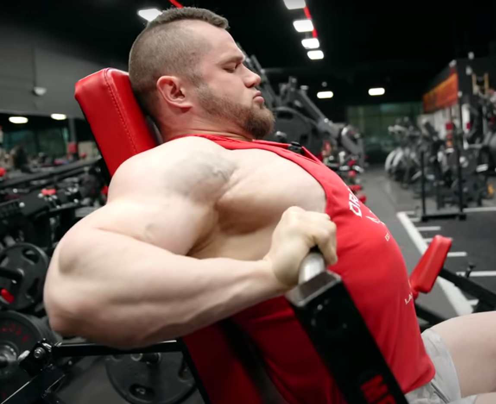
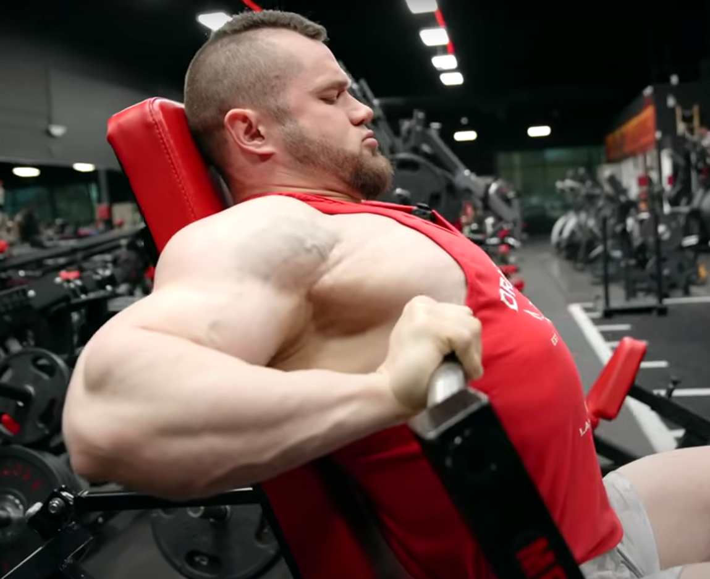

Ripetizione e Serie
Una ripetizione (o rep) è l'esecuzione completa di un singolo movimento di un esercizio, Una serie (o set) è un gruppo di ripetizioni eseguite consecutivamente.
Cedimento
Ci sono due tipi di cedimento:
- Cedimento tecnico: si raggiunge quando non si riesce più a eseguire una ripetizione con la corretta forma tecnica, ma si potrebbe ancora continuare con una forma scorretta.
- Cedimento muscolare completo: si verifica quando non si riesce più a completare una ripetizione, neanche con una forma scorretta o aiuto esterno. È il massimo livello di esaurimento muscolare.
In generale è consigliato fermarsi al cedimento tecnico per evitare infortuni.
ROM, TUT e tecnica
Il Range of motion (ROM) è l'ampiezza o distanza attraverso la quale un'articolazione si muove durante l'esecuzione di un esercizio.
 

TUT sta per Time Under Tension cioè tempo sotto tensione ma la userò per identificare una sequenza di quattro numeri che si riferiscono ai secondi della durata di ogni fase di ogni ripetizione. Le fasi sono:
- Eccentrica: la fase in cui il muscolo si allunga
- La pausa con il muscolo allungato
- Concentrica: la fase in cui il muscolo si contrae
- La pausa con il muscolo contratto
In generale un eccentrica lenta, o meglio controllata è sempre da preferire per avere una buona esecuzione minimizzare il rischio di infortuni e massimizzare lo stimolo minimizzando la fatica, così come un'evidente pausa con il muscolo in allungamento, la concentrica dev'essere un'accelerazione controllata e la pausa in accorciamento è opzionale In un mondo utopico l'esecuzione di ogni ripetizione di ogni serie di ogni esercizio dovrebbe essere perfetta (ROM completo e TUT controllato), questo per minimizzare il rischio di infortunio, quindi fatevela correggere da gente esperta, se non potete fatevi video e correggetevela da soli, guardate tutorial anche se c'è molta disinformazione. Ovviamente se vi siete sempre allenati tagliando il ROM sulla maggior parte degli esercizi, non pensate di provare la prima volta ad andare full ROM con lo stesso peso che usavate prima, partite con un peso basso e abituatevi pian piano sennò rischiate di strapparvi. Il vostro obbiettivo dev'essere tornare a fare lo stesso peso e superarlo però con ROM completo e sarà molto più impressionante. Con tecnica non intendo solo la forma di un esercizio ma anche il setting scapolare per esempio, se mentre fate un curl per esempio vi si antepone la scapola non va bene. La conseguenza di fare tutte le rep perfette col TUT giusto sarà che farete meno rep di prima, ma è quello che vogliamo perchè meno rep = meno fatica, e lo stimolo essendoci più rom e più controllo sarà maggiore.
Intensità e Volume
L'Intensità è quanto vicino andiamo al cedimento in una singola serie, può essere quantificata in vari modi, i più comuni sono RIR e RPE:
- RIR: Ripetizioni In Riserva, quante ripetizioni mancavano prima di arrivare a non riuscire a completarne un'altra
- RPE: Rate of Percieved Effort, valore da 1 a 10 soggettivo associato all'effort espresso durante la serie, 1 passeggiata 10 cediemto
Consideriamo una serie allenante per l'ipertrofia solo se si arriva a un RIR minore o uguale a 2/3. Il volume è la somma delle serie allenanti, è utile dividerlo tra totale e per singolo gruppo. Non c'è un volume massimo per cui ci siano diminishing returns ipertrofici, in generale più volume più stimolo, con la condizione di riuscire a recuperarlo, parleremo di più del volume nella parte di programmazione.
Carico esterno e interno
Il carico esterno è il peso che spostiamo, che puo essere un bilancere, un manubrio, il carico che mettiamo su un macchinario ed è indipendente dalla nostra struttura fisica. Il carico interno al contrario è il peso che sentiamo di spostare e sarà soggettivo, dipende da struttura ossera e inserzioni muscolari che andranno a modificare le leve
Stimolo ipertrofico e Fatica
Lo stimolo ipertrofico è la prima variabile che vogliamo massimizzare, il problema è che è difficile da quantificare per questo useremo dei proxy cioè delle variabili alternative:
- Volume: più volume determina più stimolo
- DOMS: Delayed Onset Muscle Soreness, il dolore muscolare indotto dall'allenamento, che può arrivare già il giorno dopo e durare per giorni.
- Pump: il gonfiore muscolare dato dalle fibre danneggiate e dal sangue che arriva al muscolo stimolato.
- Sotto certe condizioni che spiegherò nella parte di programmazione, più volume e più intensità = più stimolo
- crampi
La fatica invece è la variabile che vogliamo minimizzare. Si riferisce alla fatica che sentiamo sia durante che finito l'allenamento e anche nei giorni successivi in generale. Unite assieme in una frazione creano il rapporto stimolo fatica, che sarà un attributo fondamentale di ogni esercizio.
Misconception sul Bodybuilding
Per quanto possa essere difficile da realizzare, l'obbiettivo del Bodybuing fatto con testa è riuscire a massimizzare lo stimolo ipertrofico minimizzando il rischio di infortunio. Ma non dobbiamo pensare che per avere più stimolo bisogna alzare più peso è l'esatto opposto, noi stimoliamo il muscolo con un certo peso per un certo numero di serie e ripetizioni e come conseguenza la volta dopo che ci alleniamo, supponendo di aver recuperato bene, il muscolo necessiterà di uno stimolo maggiore e quindi dovremmo alzare il numero delle rep o serie o alzare il carico o altro. E' l'adattamento che determina il miglioramento. Non è una gara a chi solleva di più è una gara a chi solleva di meno, perchè se a me per avere il tuo stesso stimolo ipertrofico bastano 10kg e a te ne servono 20, io avrò meno rischio di infortunarmi e meno fatica generale.
Obbiettivi dell'allenamento
L'obbiettivo primario dell'allenamento massimizzare lo stimolo ipertrofico minimizzando il rischio di infortuni e la fatica. Questo verrà realizzato eseguendo il massimo numero di serie allenanti che riusciamo a recuperare in tempo per l'allenamento successivo, concendrandoci sull'andare vicini al cedimento (RIR minore o uguale a 2) e mantenendo la tecnica impeccabile.
Programmazione